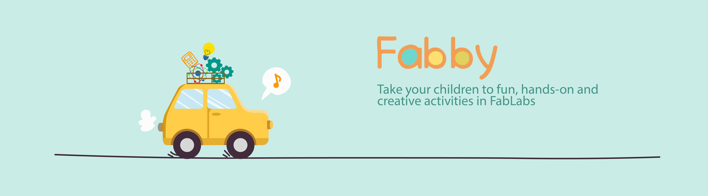
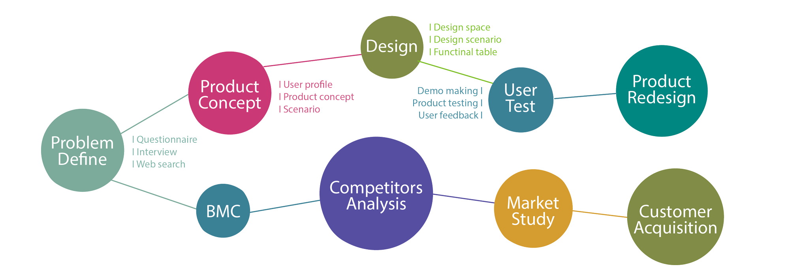
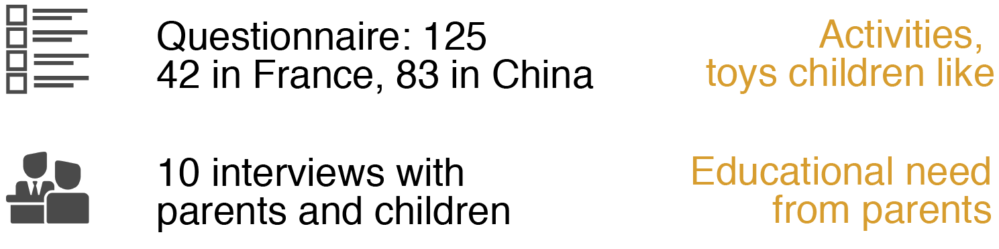
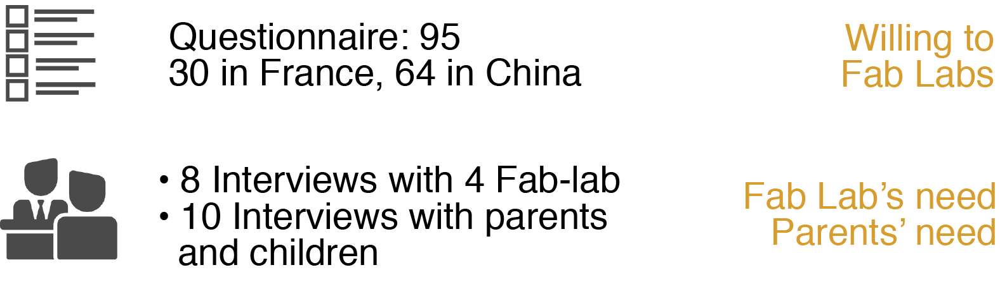
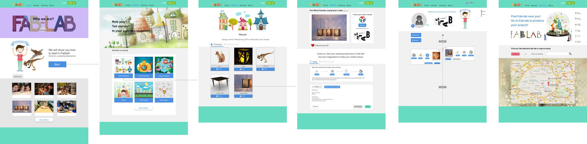
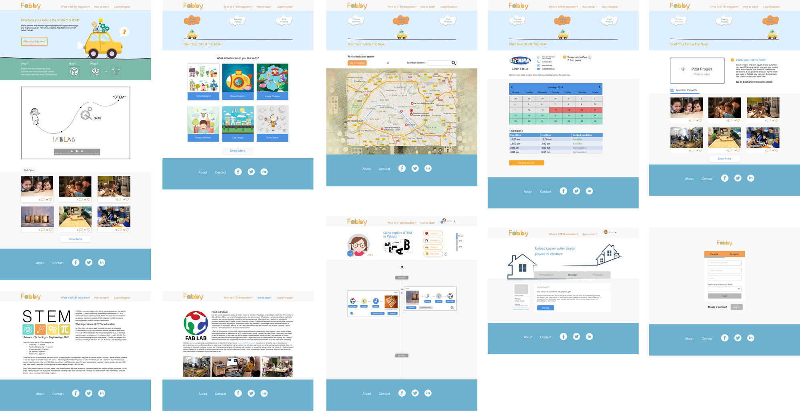

2015.9~2016.5
Service Design
Web Design
Entrepreneurship Program
University of Paris-Sud, Paris
Supervised by Prof. Wendy
Problem define & Solution finding
UX/UI & Visual Design
Product Design
Fabby was a service system(based on a website)
which organized fun field trips for parents and
kids to explore tomorrow’s technology in Fab
Labs.
We started from interviews /questionnaires to
find problems /needs then went further in
designing solutions and business model.

Through interviews and
questionnaires we found:
More than 80% parents
do not know Fab Labs.
Nearly 70% parents who
know Fab Labs do not
know how to start within
a Fab Lab.
Build up a bridge between Families and Fab Labs
Offer fun field trip for parents and kids to explore
tomorrow’s technology in Fab Labs.
Fabby website:
www.fabby.eu
We posted Fabby in Facebook,
Twitter, Xineurope forum to
attract parents. Also we went
to science museums, Fab Labs
to catch our customers.
28 parents in total were
interested in Fabby, and 3 of
them finally experienced
Fabby trip in Lorem Fablab
which was our partner.
We earned first 15 euros from Jennifer’s family.
We were 5-person team. And I was the only designer in the team. I got involved in problem defining and solution finding while took charge of questionnaires making. During the implementation phase, my role can be divided into three parts: UX/UI design (information architecture, workflow, wireframes, interactions), Visual design (high-fidelity interface, video making, team T-shirt design), Product design (laser cutter models design).
The way to Fabby was tortuous. We experienced 3 phases to our final product.

The idea was children can customize laser-cutter models on-line and go to Fab labs to product it
But it is hard to realize it technologyly.
And this idea did not match real user’s need and cannot attract kids

A

First Iteration of web flow
How to help kids learn tomorrow’s techology better?
Fun Field Trips for parents and kids to explore tomorrow’s technology in Fab Labs

Second Iteraction of web flow
It was the first time for me to do a entrepreneurship program which lasted for one year. I had a feeling that we did build up a real start-up from this project. What I learned from this project can be devided into three parts: business, programming, and design.
• Business: Build up a business canvas and analysis business chance; Explore solutions from both users and marketing perspective; Competitors analysis and marketing size evaluation.
• Programming: Learned HTML, CSS, and Javascript when built up Fabby website.
• Design: Practiced a lot onsite interview skills during the period of defining problems/needs. Gain the Web design, user testing and evaluation skills. Also practiced 3D model building and graphic design skills.
© 2017 My Profile. All Rights Reserved | Design by Chenghong